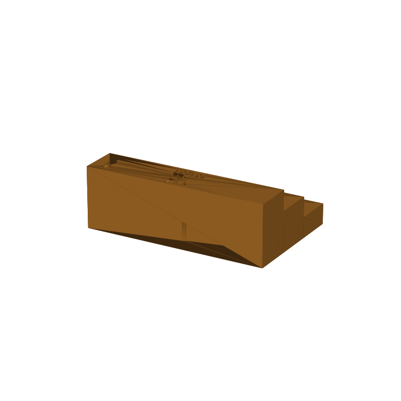

Insect pinning block STL, three stage heights in one piece
Setting a pinned insect at a uniform height is a three-step job: the specimen at one height, the first label lower, the second lower again. This block does all three steps in one piece. Push the insect down until its pin bottoms out on the stage you choose: 24 mm for the specimen, 16 mm for the first label, 8 mm for the second.
Each stage top has a Ø1.5 mm guide hole sized for size 0-5 pins (0.35 to 0.7 mm shanks), so the pin stays straight while you adjust the insect or slide labels on. The tall stage also has three Ø3 mm pockets for spare pins, points down. The guide holes run through into the base, so a pin that slips lands tip-first on the print bed side instead of snapping.
The whole block is one piece and prints flat with no supports. The stage heights are printed into the model as recessed numerals, so the tops read 24 mm, 16 mm and 8 mm on the part itself. Every dimension is a parameter in the generator (gen_pinblock24.py): block size, stage heights, guide hole diameter, storage pocket count and numeral depth.
This page carries the measured spec sheet: dimensions taken from the mesh, the stage and hole layout, and preview renders, so you can check the sizes before you slice.

Spec sheet, measured from the mesh
| Spec | Value |
|---|---|
| Block | 72.0 × 46.0 × 24.0 mm, one piece, exported flat on the bed |
| Stage heights | 24 / 16 / 8 mm work heights (specimen, first label, second label), verified from the mesh: column tops at z = 24, 16, 8 |
| Stage columns | Three columns along the 46 mm width, 72 × 15.3 mm each, full height to the bed, tallest first |
| Pin guide holes | Ø1.5 mm, one per stage top, sized for size 0-5 pins (0.35-0.7 mm shanks), cut through the column into the base |
| Spare-pin pockets | Three Ø3 mm pockets in the tall stage top, 14 mm deep, pins store points down |
| Numerals | Stage heights recessed 1.2 mm into each stage top, digits 5 mm tall (“24 mm”, “16 mm”, “8 mm”) |
| Volume | 52.5 cm³ total, about 65 g of PLA |
| Print time | About 2.2 h, PLA, 0.4 nozzle, 0.2 mm layers |
| Construction | One piece, no fasteners, prints flat with no supports; the pockets and guide holes are straight vertical cuts |
| Mesh check | Watertight, winding consistent, 1 body, 4,042 faces (trimesh 5.1.0, 2026-09-10) |
| Files | STL and 3MF plus a parametric generator script |
| License | CC-BY 4.0 on the MakerWorld upload; royalty free, no AI training, direct from us |
How the three heights work
A pinned specimen needs three things set at fixed depths: the insect itself, then the first label under it, then the second. Pushing the pin down until it bottoms out on a stage gives you that stage's height as the drop below the pin head, one stage per step: 24 mm for the specimen, 16 mm for the first label, 8 mm for the second. The steps are 8 mm apart, which is the standard spacing between specimen and labels.
The Ø1.5 mm guide hole in each stage top takes size 0-5 entomology pins, 0.35 to 0.7 mm shanks, and leaves at least 0.8 mm of diametral clearance on the fattest size 5. Seat the pin in the hole and it stays straight while you adjust the insect or slide a label on. Because each column is solid down to the bed and the hole is cut all the way through, a pin that slips travels tip-first to the table instead of snapping against a blind bottom.
The recessed numerals mark each stage top, so you never have to measure which column is which. Spare pins live points-down in the three Ø3 mm pockets in the tall stage, where they cannot roll off the bench.
Print notes
The block slices as exported: three full-height columns flat on the bed, pockets and guide holes cut straight down, no overhangs, no supports. The mesh is checked before upload: watertight, winding consistent, one solid body.
I have not test-printed this one yet. If pins sit loose in the guide holes, print the guide columns at 100% infill or drop guide_d to 1.3 mm in the generator and rebuild. Both are one-line changes: the block size, stage heights, guide hole diameter, storage pocket count and numeral depth are all parameters of gen_pinblock24.py. If you print it, post a make with how your pins fit.
Where to get the files
The pinning block is staged on our MakerWorld account and goes public on our profile once it is submitted and clears review.
A second, compact version of this block sits on a 6 mm base with step tops at 30, 22 and 14 mm and a Ø0.65 mm guide hole matched to #3 pins: the compact pinning block STL spec sheet.
More printed organizers and tools, with a status table for the pool: 3D printed desk organizers and printable tools.
Compare all 20 models by solid mesh volume in the STL volume ledger.
FAQ
Which pin sizes does the guide hole take?
The Ø1.5 mm hole covers standard size 0-5 entomology pins, 0.35 to 0.7 mm shanks, with at least 0.8 mm of diametral clearance even on a size 5. That clearance is deliberate for sliding labels, and if your pins wobble more than you like, the generator takes guide_d as a parameter: drop it to 1.3 mm and rebuild.
Why three heights in one block?
The specimen and its two labels sit at different depths in the box, and each step needs its own reference. One block with 24, 16 and 8 mm stages covers the whole sequence in order, the heights are printed into the part as numerals, and there is nothing to assemble or adjust.
Why are the guide holes cut all the way through?
A through hole gives a slipped pin somewhere to go: it lands tip-first on the table side instead of snapping against a blind bottom. The only blind cuts are the three spare-pin pockets, and those are straight vertical holes 14 mm deep, which print clean.